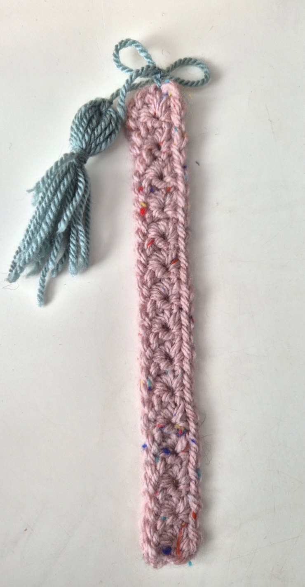
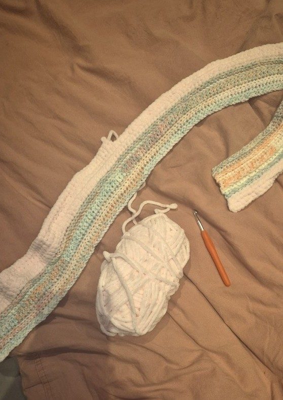
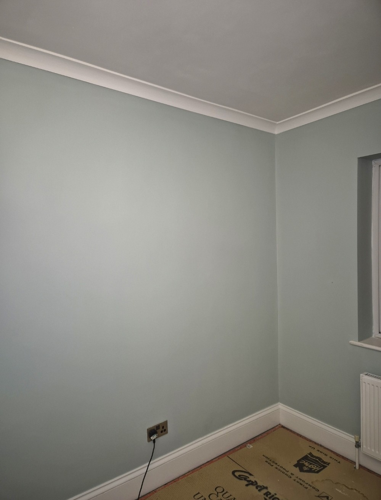
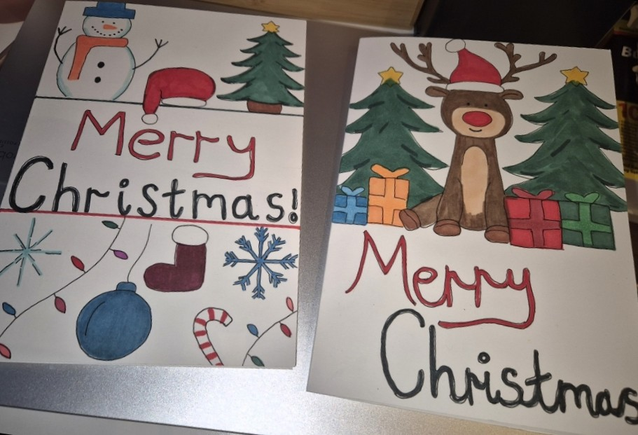

Crochet
I started learning to crochet back in 2023, I always admired it from a far so decided to give it a go and really enjoyed it.
It took some practice and I'm still learning but so far I've made little characters, a top, fingerless mittens, hairbands, headbands and more.
Below is a bookmark I've made and the blanket I have started to make, the blanket will be a long ongoing project.


DIY
I enjoy DIY and completing different diy projects, my dad has taught me everything I know.

Drawing/Art
I have always enjoyed drawing and painting, anything to do with crafts. I really enjoy the complicated paint by numbers that have very small areas to paint as it creates a lovely piece of art at the end.

Some other hobbies:
- Editing home videos together
- Playing the piano
- Watching movies and my favourite TV programmes